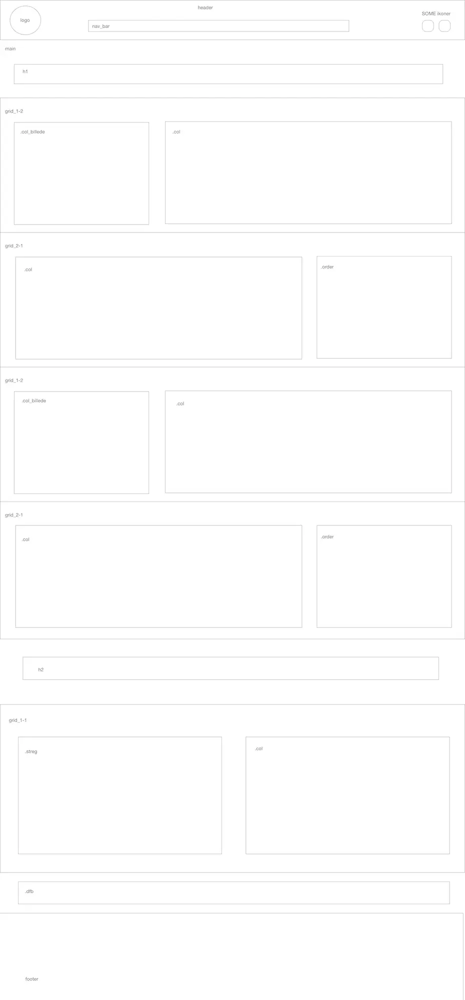
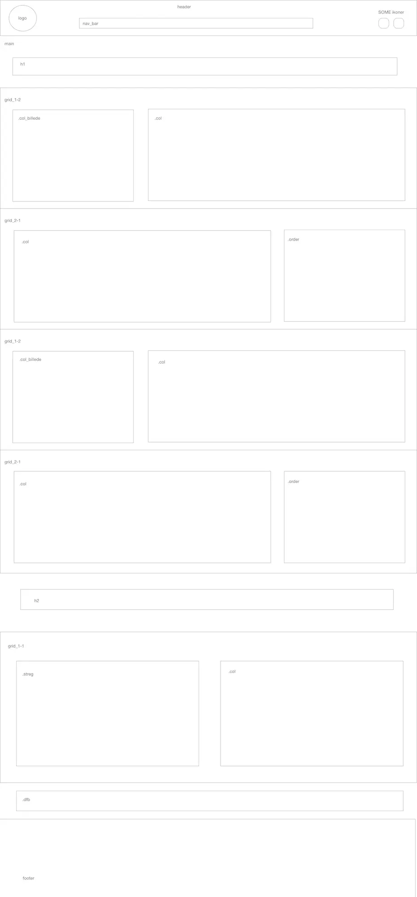

Grundlæggende Indhold
I tema 5 har formålet være at få kendskab til videoproduktion samt at skabe en samlet digital løsning i en gruppekonstelation for en ekstern kunde. Ved videoproduktionen indgår læring om selve optagelserne, videoredigering i Premiere Pro, lydredigering i Audition samt implementering af video på et site. I første del af temaet interviewede jeg en person med en passion, og kreerede herefter en kort præsentations video. Denne video implemterede jeg på et one-page site, der skulle fremstå som en filmplakat. I den anden del af temaet arbejdede jeg sammen med min gruppe om at finde en eksisterende virksomhed. For denne virksomhed skulle vi re-designe deres nuværende hjemmeside samt lave en kort virksomheds video. I gruppearbejde gjorde vi brug af Daily Scrum, så vi undervejs kunne gøre status og samarbejde om eventuelle problemstillinger. Vi gjorde brug af test som BERT, 5-sekunders og Light House test, for at teste både den eksisterende og vores re-designede digitale løsning. Med fra dette tema tager jeg helheden i at skabe et produkt til en ekstern kunde, og jeg kan konkludere at samarbejdet og kommunikationen mellem alle parter er vigtig.
Redesign af Massagefusion.dk
I samarbejde med min gruppe redesignede vi Massage Fussion's hjemmeside. Jeg stod for siden behandlinger. Det var en side som virksomheden ikke havde i forvejen. De havde kun en lille sektion med behandlingernes titel. Herunder kan de se deres nuværende hjemmeside og vores redesignet hjemmeside. Undervejs har vi dokumenteret vores proces. Alt fra styletile til udførte test kan findes i vores procesdokument. Herunder kan du også se mit layoutdiagram og mitwireframe for bestillingssiden.
 
